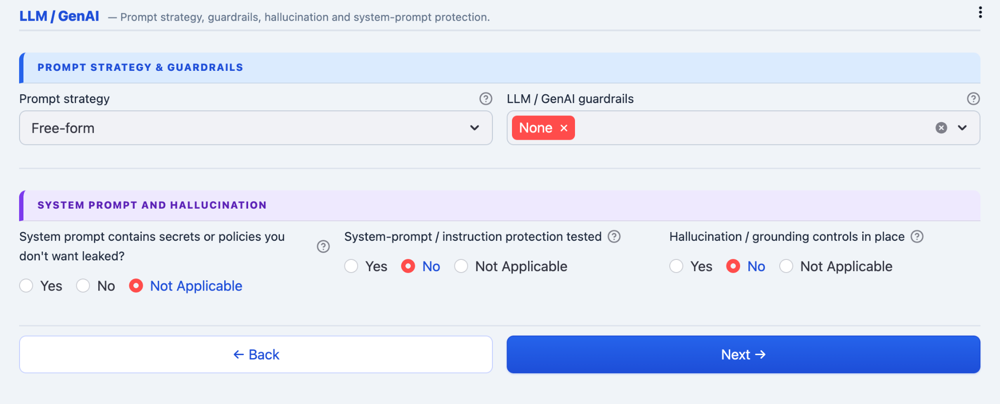
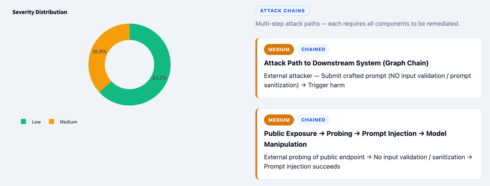
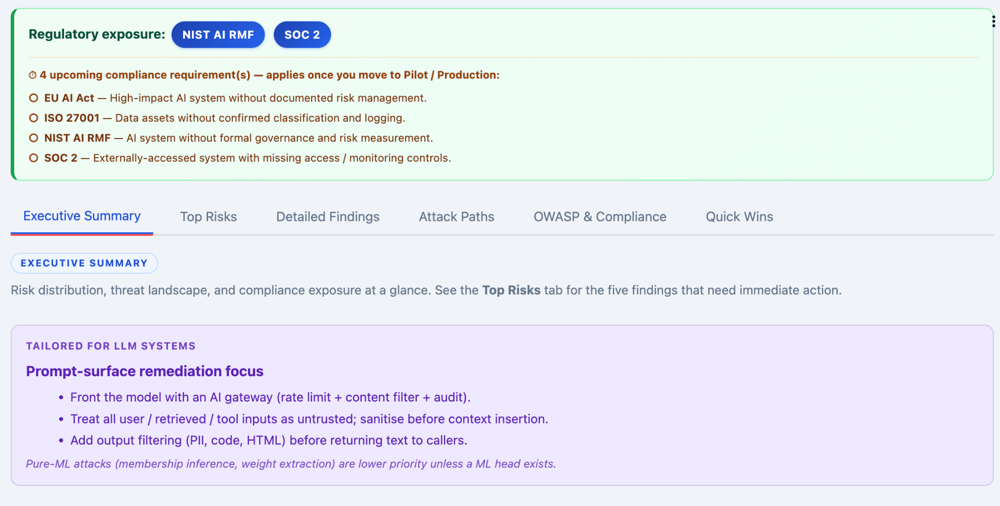
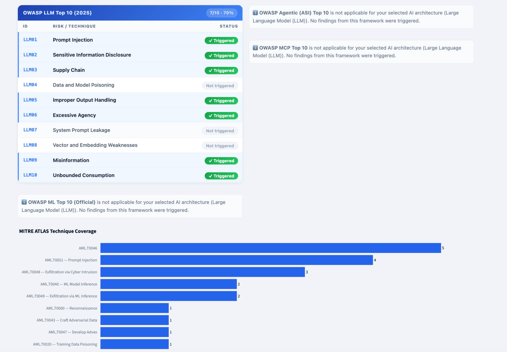

Built for More Than Just LLMs
The platform supports multiple AI architectures and dynamically adjusts questions, controls, attack paths, and findings based on the selected system.

Open-source AI security threat modeling platform for LLMs, RAG pipelines, Agentic AI systems, MCP integrations, multimodal applications, and classical ML architectures.
Most AI security assessments stop at static checklists. Modern AI systems are no longer isolated models. They use tools, memory, vector databases, external APIs, autonomous agents, browser automation, and downstream integrations.
Analyze production-style AI architectures instead of isolated prompts. Model runtime behavior, autonomous execution, external systems, multi-agent communication, and downstream attack paths.
Correlate multiple weak controls into chained attack paths. Detect how medium findings combine into larger exploitation scenarios.
Automatically map findings to OWASP LLM Top 10, MITRE ATLAS, NIST AI RMF, ISO 27001, SOC2, HIPAA, GDPR, EU AI Act and more.
The platform supports multiple AI architectures and dynamically adjusts questions, controls, attack paths, and findings based on the selected system.
Threat modeling support for autonomous agents, multi-agent systems, persistent memory, browser-use agents, runtime execution, external APIs, and code execution workflows.


Analyze runtime exposure including direct user access, autonomous execution, downstream integrations, external systems, tool usage, and real-time processing.
The assessment adapts based on architecture selection and runtime behavior.
Capture deployment stage, business impact, AI type, model patterns, supply-chain exposure, and regulated domains.
Evaluate sensitive data handling, runtime outputs, external integrations, governance controls, and downstream systems.
Analyze prompt injection exposure, hallucination controls, system prompt leakage risk, moderation gaps, and output handling.


Findings are not treated as isolated issues. The engine correlates weak controls into deterministic attack paths.


Generate security reports understandable by:

Risks are ranked based on likelihood, impact, exploitability, and missing control correlation.


Every finding includes:
Automatically align findings with AI security and governance frameworks.

The hosted version may take a few seconds to wake up if inactive due to free-tier hosting.
Open AI Threat Modeling Assistant